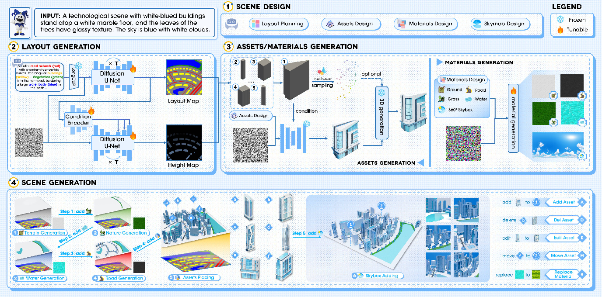
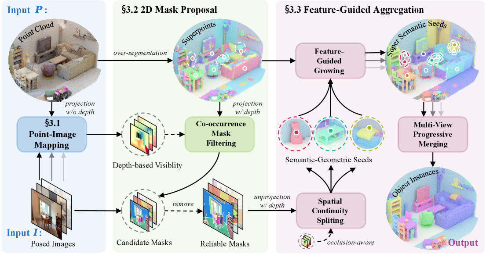
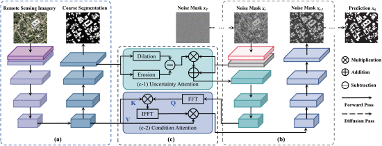
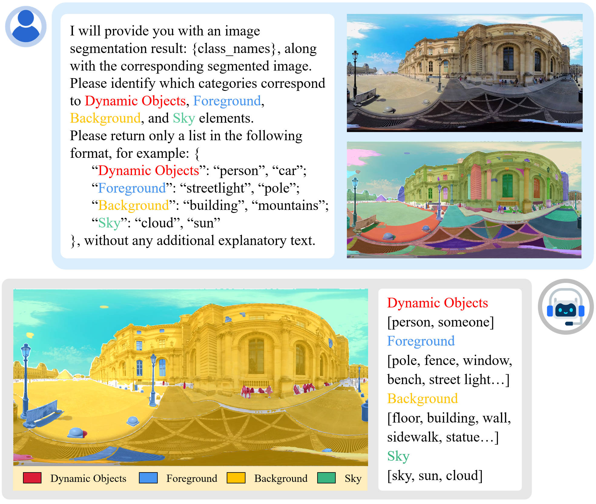
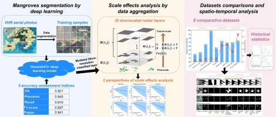

个人简介
Biography

陈一平
教授 / 博士生导师
团队负责人 · 中山大学逸仙学者 · 百人计划
陈一平，中山大学遥感科学与技术学院教授、博士生导师,入选 国家级青年人才计划，担任3DSTAILab负责人，曾担任中山大学科学研究院副处长（2023.5-2025.5）。她是 IEEE高级会员、CSIG高级会员。 主要研究方向包括 激光雷达遥感、三维点云智能处理、遥感图像处理 以及 可持续发展应用。 陈一平教授主持包括 国家自然科学基金 在内的科研项目 15 项，参与包括国家自然科学基金重点项目在内的科研项目 16 余项。 目前已在 ISPRS JPRS、CVPR、IEEE TGRS、IEEE TITS、JAG 等国内外重要期刊和会议上发表论文 100 余篇。 并担任 TGRS、JAG 等期刊 副主编， The Innovation 期刊 青年编委等，曾担任国际摄影测量与遥感学会 “激光雷达、激光测高与多传感器融合” 工作组主席 (2023-2026)等。
近期动态
Recent News
论文 SW-CLIP 被 GeoAI 2026 接收
论文 MajutsuCity 在 CCF-A类会议 CVPR 2026 发表。
陈一平教授参编的IEEE SA 1937.6 Draft Standard for Unmanned Aerial Vehicle (UAV) Light Detection and Ranging (LiDAR) Remote Sensing Operation批准通过。
论文 SPARC 被 ISPRS Congress 2026 接收
论文 City-Facade 被中科院一区TOP期刊 ISPRS Journal 接收。
论文 Exploring the Influence of Urban Land Use... 被期刊 Urban Informatics 接收。
博士生韩汀入选中国科协青年科技人才培育工程博士生专项计划；陈一平副教授指导的大学生创新项目获评优秀。
陈一平副教授参加 ISPRS ISDE 国际会议获得 最佳口头报告奖。
陈一平副教授获批 2026 年度江西省重点研发计划项目。
论文 SGS-3D 被 CCF A类会议 AAAI 2025 接收。
陈一平副教授获 2025 地理信息产业协会 地理信息科技进步一等奖。
两篇论文被 ACM SIGSPATIAL GeoAI/GeoIndustry Workshop 接收。
课题组参加第九届全国激光雷达大会，获青年优秀论文奖、数据处理竞赛特等奖及优秀指导教师奖。
陈一平副教授担任会议主席的低空遥感研讨活动在北京顺利举行。
论文 Individual tree segmentation... 被中科院一区TOP期刊 Urban Forestry & Urban Greening 接收。
论文 VoxelFlow 在 CW 2025 国际会议获得最佳报告提名。
课题组师生在澳大利亚布里斯班参加 IEEE IGARSS 2025。
课题组师生在广东深圳参加中国空间智能大会。
陈一平副教授当选 IEEE 固定翼垂直起降无人机输电线路训练标准委员会秘书长。
课题组师生在广东珠海参加视觉与学习青年学者研讨会。
陈一平副教授获 北京市技术发明一等奖。
论文 A 3D Perspective... 被中科院一区TOP期刊 Building and Environment 接收。
研究兴趣
Research Interests
代表作
Selected Publications





网站访客
Website Visitors
合作
Collaborations

加入我们
Join Us
发送消息
研究生招生 Recruitment
实验室长期招收 硕士 博士 博士后， 同时欢迎学有余力的本科生提前加入科研训练。
希望你具备：
- 较强的 自我驱动力 与自律精神；
- 浓厚的 研究兴趣 与持续学习意愿；
- 良好的 数学与专业基础。
有意者请发送简历至：
chenyp79@mail.sysu.edu.cn